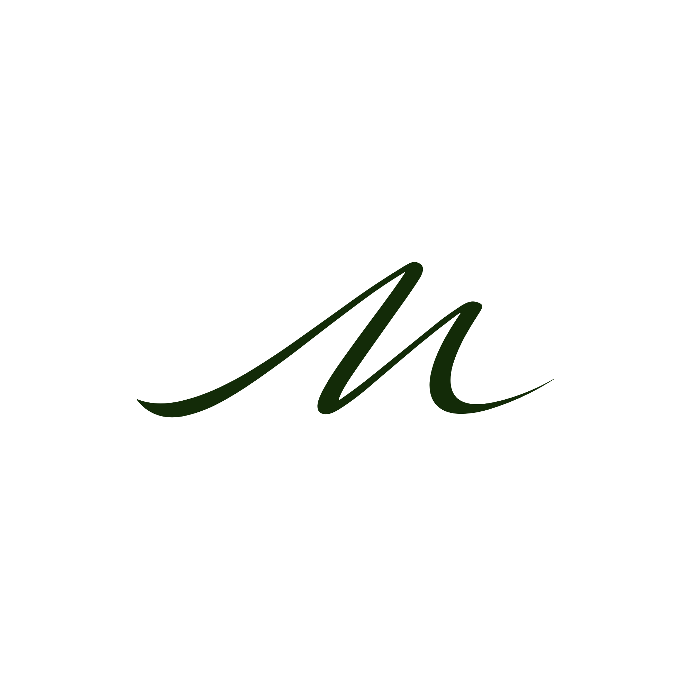

Agencia creativa · Música clásica
Branding, imagen y comunicación visual para músicos, ensembles, festivales e instituciones clásicas. Desde dentro del ecosistema musical.
Quiénes somos
Moderato Studio nace desde dentro del ecosistema musical. Entendemos sus códigos, su estética, sus tiempos y sus necesidades reales.
No traducimos el arte a píxeles. Lo habitamos, lo comprendemos y lo proyectamos con la elegancia que merece.
Lo que hacemos
Captamos la magia de conciertos, festivales y eventos con la sensibilidad que la música clásica exige.
Creación y distribución de contenido estratégico para músicos e instituciones. Cada publicación, una obra de comunicación.
Sesiones para artistas, ensembles e instituciones. Imágenes que hablan antes de que suene la primera nota.
Redefinimos la identidad visual de organizaciones musicales con coherencia y visión estratégica.
Webs elegantes, funcionales y con alma. Presencia digital que refleja la altura artística de quien la habita.
Nuestro trabajo
Cobertura audiovisual
Festival de Música Antigua · 2024
Rebranding
Orquesta de Cámara · Identidad
Fotografía
Sesión artística · Cuarteto de cuerda
Cuéntanos tu historia. Juntos encontraremos la forma de traducirla en una identidad visual y digital que esté a la altura de tu música.